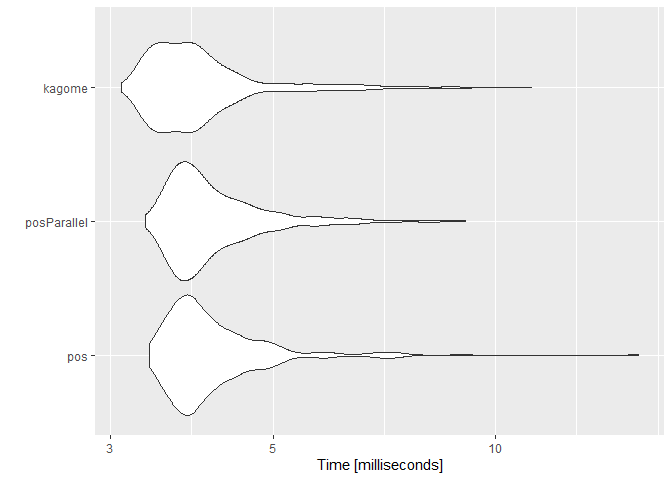
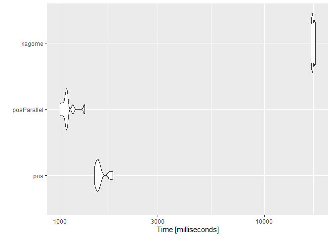

RcppKagome is an R interface to ikawaha/kagome; Self-contained Japanese morphological analyzer written in pure Go.
Installation
remotes::install_github(
"paithiov909/RcppKagome"
#, INSTALL_opts = "--no-multiarch" # for windows user
)Note that the installation RcppKagome from source package requires ikawaha/kagome (v2 or later).
By default, the package uses a static library generated with Cgo, which contains the Japanese IPA dictionary.
However, you can also specify another dictionary to be bundled before build and install the package. If you would like to use another one, please set RCPPKAGOME_DIC as an evironment variable.
Sys.setenv(RCPPKAGOME_DIC = "uni") # for using uni-dic
# Or
Sys.setenv(RCPPKAGOME_DIC = "ko") # for using mecab-ko-dicUsage
Call Kagome
res <- RcppKagome::kagome("雨にも負けず 風にも負けず")
str(res)
#> List of 1
#> $ :List of 11
#> ..$ 0 :List of 5
#> .. ..$ Id : int 376225
#> .. ..$ Start : int 0
#> .. ..$ End : int 1
#> .. ..$ Surface: chr "雨"
#> .. ..$ Feature: chr [1:9] "名詞" "一般" "*" "*" ...
#> ..$ 1 :List of 5
#> .. ..$ Id : int 53040
#> .. ..$ Start : int 1
#> .. ..$ End : int 2
#> .. ..$ Surface: chr "に"
#> .. ..$ Feature: chr [1:9] "助詞" "格助詞" "一般" "*" ...
#> ..$ 2 :List of 5
#> .. ..$ Id : int 73244
#> .. ..$ Start : int 2
#> .. ..$ End : int 3
#> .. ..$ Surface: chr "も"
#> .. ..$ Feature: chr [1:9] "助詞" "係助詞" "*" "*" ...
#> ..$ 3 :List of 5
#> .. ..$ Id : int 352000
#> .. ..$ Start : int 3
#> .. ..$ End : int 5
#> .. ..$ Surface: chr "負け"
#> .. ..$ Feature: chr [1:9] "動詞" "自立" "*" "*" ...
#> ..$ 4 :List of 5
#> .. ..$ Id : int 36553
#> .. ..$ Start : int 5
#> .. ..$ End : int 6
#> .. ..$ Surface: chr "ず"
#> .. ..$ Feature: chr [1:9] "助動詞" "*" "*" "*" ...
#> ..$ 5 :List of 5
#> .. ..$ Id : int 95
#> .. ..$ Start : int 6
#> .. ..$ End : int 7
#> .. ..$ Surface: chr " "
#> .. ..$ Feature: chr [1:9] "記号" "空白" "*" "*" ...
#> ..$ 6 :List of 5
#> .. ..$ Id : int 380203
#> .. ..$ Start : int 7
#> .. ..$ End : int 8
#> .. ..$ Surface: chr "風"
#> .. ..$ Feature: chr [1:9] "名詞" "一般" "*" "*" ...
#> ..$ 7 :List of 5
#> .. ..$ Id : int 53040
#> .. ..$ Start : int 8
#> .. ..$ End : int 9
#> .. ..$ Surface: chr "に"
#> .. ..$ Feature: chr [1:9] "助詞" "格助詞" "一般" "*" ...
#> ..$ 8 :List of 5
#> .. ..$ Id : int 73244
#> .. ..$ Start : int 9
#> .. ..$ End : int 10
#> .. ..$ Surface: chr "も"
#> .. ..$ Feature: chr [1:9] "助詞" "係助詞" "*" "*" ...
#> ..$ 9 :List of 5
#> .. ..$ Id : int 352000
#> .. ..$ Start : int 10
#> .. ..$ End : int 12
#> .. ..$ Surface: chr "負け"
#> .. ..$ Feature: chr [1:9] "動詞" "自立" "*" "*" ...
#> ..$ 10:List of 5
#> .. ..$ Id : int 36553
#> .. ..$ Start : int 12
#> .. ..$ End : int 13
#> .. ..$ Surface: chr "ず"
#> .. ..$ Feature: chr [1:9] "助動詞" "*" "*" "*" ...Prettify Output
res <- RcppKagome::kagome(
c(
"陽が照って鳥が啼き あちこちの楢の林も、けむるとき",
"ぎちぎちと鳴る 汚い掌を、おれはこれからもつことになる"
)
)
res <- RcppKagome::prettify(res)
str(res)
#> 'data.frame': 32 obs. of 11 variables:
#> $ doc_id : Factor w/ 2 levels "1","2": 1 1 1 1 1 1 1 1 1 1 ...
#> $ token : chr "陽" "が" "照っ" "て" ...
#> $ POS1 : chr "名詞" "助詞" "動詞" "助詞" ...
#> $ POS2 : chr "一般" "格助詞" "自立" "接続助詞" ...
#> $ POS3 : chr NA "一般" NA NA ...
#> $ POS4 : chr NA NA NA NA ...
#> $ X5StageUse1: chr NA NA "五段・ラ行" NA ...
#> $ X5StageUse2: chr NA NA "連用タ接続" NA ...
#> $ Original : chr "陽" "が" "照る" "て" ...
#> $ Yomi1 : chr "ヒ" "ガ" "テッ" "テ" ...
#> $ Yomi2 : chr "ヒ" "ガ" "テッ" "テ" ...In case using IPA dictionary, prettified outputs have these columns.
- doc_id: 文番号（sentence index）
- token: 表層形 (surface form)
- POS1~POS4: 品詞, 品詞細分類1, 品詞細分類2, 品詞細分類3
- X5StageUse1: 活用型（ex. 五段, 下二段…）
- X5StageUse2: 活用形（ex. 連用形, 基本形…）
- Original: 原形（lemmatised form）
- Yomi1: 読み（readings）
- Yomi2: 発音（pronunciation）
Performance
Targets of Comparison
-
paithiov909/RcppKagome
- RcppKagome::kagome
-
paithiov909/RcppMeCab: a fork originally from junhewk/RcppMeCab
- RcppMeCab::pos
- RcppMeCab::posParallel
Data
Here uses whole text of ‘Wagahai Wa Neko Dearu’ written by Natsume Souseki. The text is originally from Aozora Bunko.
Tokenize Character Scalar
tm <- microbenchmark::microbenchmark(
pos = RcppMeCab::pos(sentences[30]),
posParallel = RcppMeCab::posParallel(sentences[30]),
kagome = RcppKagome::kagome(sentences[30]),
times = 500L
)
summary(tm)
#> expr min lq mean median uq max neval
#> 1 pos 3.3877 3.73535 4.198587 3.93740 4.37230 15.6786 500
#> 2 posParallel 3.3530 3.73395 4.202371 3.94565 4.40490 9.1248 500
#> 3 kagome 3.1074 3.52720 4.037607 3.81570 4.14655 11.2245 500
ggplot2::autoplot(tm)
#> Coordinate system already present. Adding new coordinate system, which will replace the existing one.
Tokenize Character Vector
tm <- microbenchmark::microbenchmark(
pos = RcppMeCab::pos(sentences),
posParallel = RcppMeCab::posParallel(sentences),
kagome = RcppKagome::kagome(sentences),
times = 10L
)
summary(tm)
#> expr min lq mean median uq max
#> 1 pos 1473.8525 1503.463 1577.414 1535.095 1578.254 1811.067
#> 2 posParallel 999.2133 1046.868 1092.551 1076.754 1083.400 1318.865
#> 3 kagome 16849.0704 17071.989 17285.732 17178.416 17562.991 17745.126
#> neval
#> 1 10
#> 2 10
#> 3 10
ggplot2::autoplot(tm)
#> Coordinate system already present. Adding new coordinate system, which will replace the existing one.